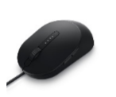

Catálogo de Produtos
Foto
Código
Descrição
Qtde em estoque
Valor unitário

1
Mouse Laser com fio Dell
5
R$ 179,00
2
Mouse Bluetooth Dell
6
R$ 338,00
3
Mouse Óptico USB Preto 100
3
R$ 48,30
Descrição
Características do Produto
Sensor óptico preciso com 1.600 DPI permite que você trabalhe na maioria das superfícies
Configuração USB rápida e fácil com cabo de 1,5m
Design ambidestro, produzido para caber de forma natural e perfeita na palma da sua mão
Três botões integrados
Ampla compatibilidade: Windows e Mac
Avaliação do Produto
José Aparecido: Muito bom
Joaquim Jorge: Bom